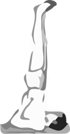

肩立式、魚式身印、叩胸鎖印
這三個動作可以強化控式空元素，空元素能讓我們放鬆、放空，壓力很大時也可以看看藍色天空，或藍色東西，這也可以增加空元素
練習方法:
肩立式與魚式身印組合對強化上呼吸道有很大的幫助。練習一次肩立式之後，休息20秒以上。接著，再練習魚式身印，停留時間為肩立式的一半。如肩立式練習30秒，魚式身印就練習15秒。之後，休息20秒以上。這樣，算一個回合，一共練習三個回合。這兩個動作練習之間，都需要停留20秒以上，這樣可以避免暈眩、不舒服的現象。
1. 肩立式
仰臥，慢慢將全身抬起並保持正直，把全身重量放在兩肩。下巴須與胸部接觸。雙手在兩腰支撐軀幹。腳趾靠攏，眼睛須注視腳趾。自由呼吸，停留不超過5分鐘。初學者，建議只停留8到30秒就好，千萬不要免強，30秒後，用腰部的力量慢慢地放下，放下時脖子不可離地，以免受傷，做完後休息20秒鐘，再練習魚式身印。這個動作練習3次，一開始可以先做一次，等熟悉後後再慢慢增加到3次。做不到完整肩立式的人，可以考慮改練習背立式即可。背立式，眼睛注意著腳膝蓋。
肩立式功效：
1. 強化呼吸系統，可以預防與治療感冒、氣喘與咳嗽有治療功效
2. 強化氣管與聲帶
3. 對全身機能都有幫助，強化每一脈輪，使身體很健康，不會生病，延年益壽
4. 增強活力，使身體充滿動能
5. 活化大腦細胞，平衡腦部腺體
6. 強化腹部收縮，改善消化吸收與排泄問題，尤其對吸收不好的人特別有益
7. 治療甲狀腺分泌低下
8. 防止與治療靜脈曲張、內臟下垂
9. 對頸椎與肩膀僵硬者有益
10. 改善氣血循環
11. 強化神經系統，有益於失眠、焦慮等問題，有助放鬆與情緒穩定
12. 增強專注力與定力
2. 魚式身印
以蓮花式躺下，頭頂著地，兩手握雙腳的大拇趾。自由呼吸，停留不超過兩分半鐘。此式練習三次。無法做蓮花座的人，也可以用簡單坐姿，或改成練習簡單魚式也可以。
魚式身印功效：
1. 強化呼吸系統，可以預防與治療感冒、氣喘與咳嗽有治療功效
2. 強化氣管與聲帶
3. 治療活化甲、副甲狀腺體，促進身體鈣、碘等元素的平衡
4. 強化記憶力，活化大腦細胞，平衡腦部腺體
5. 活化脊椎，強化神經系統，有益於失眠、焦慮等問題，有助放鬆與情緒穩定
6. 強化心肺機能，擴展胸腔，強化自癒力與免疫力
7. 改善彎腰駝背問題
8. 增強蓮花座的穩定性，柔軟骨盆腔，加強控制第一、二脈輪的習性